Motions as Queries: One-Stage Multi-Person Holistic Human Motion Capture(CVPR’25)
GLAMR, WHAM, TRACE, 4DHumans refer
1. Introduction
1) Motivation
- Detection \(\rightarrow\) Tracking \(\rightarrow\) HPS
- Error propagation
- tracker가 위치를 잘못 파악하면, motion predictor가 잘못된 입력
- 최종 예측 정확도가 떨어짐
- 대부분의 tracker들이 사람에 최적화되지 않음
- End-to-End 학습이 불가능
- 각 사람마다 tracker, predictor 를 순차적으로 적용하므로 사람 많은 영상에서는 추론 시간 증가
2) Idea
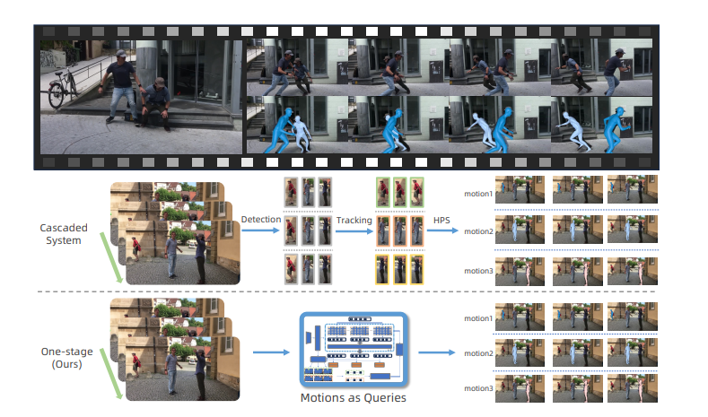
- 기존 3-stage cascaded system을 단일 네트워크로 통합
- Detection, Tracking, Pose and Shape Estimation을 동시에 처리
- 각 사람의 motion을 query로 표현
3. Method
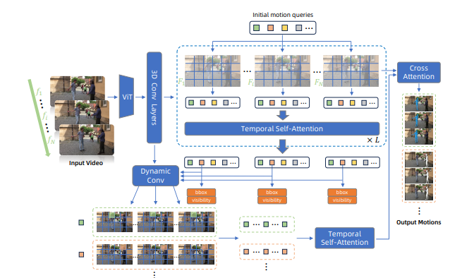
1) Preliminaries
- \(H\) = \(SMPL\)-\(X\)(\(\theta, \beta, \alpha\))
- \(\theta \in \mathbb{R}^{(53\times 3)}\) : pose parameters
- \(\beta \in \mathbb{R}^{10}\) : shape parameters
- \(\alpha \in \mathbb{R}^{10}\) : Face expressions
- \(H\) \(\in \mathbb{R}^{(10475 \times 3)}\) : 10,475 vertices로 구성된 whole-body mesh
- \(M^k = {H_i^k}, i=1,2,...,N.\)
- \(H^k\) : a whole-body motion sequence of person \(k\)
- \(N\) frames
2) Overview
- input: \(V\) = {\(I_1,I_2,...,I_N\)}, with \(N\) frames
- output : \(O\) = {\(M^1,M^2,...,M^K\)}, where \(K\) is numver of persons presented in the video
3) Modeling Whole-body Motions with Unitary Queries
- i는 frame, j는 사람
- Spatial-Temporal Feature Extractor
- \(F_1,F_2,...,F_N\)={Conv3D}(ViT({\(I_1,I_2,...,I\)}))
- \(F_i\)는 \(i\)번째 프레임의 feature map
- Temporal-Consistent Human Localization (detection과 tracking 동시에 수행)
- \(Q_{\text{init}}\) = {\({q¹_{\text{init}}, q²_{\text{init}}, ..., q^S_{\text{init}}}\)}
- B-0) Initial Motion queries
- \(q^j_{\text{init}} \in \mathbb{R}^d\)
- S : 처리가능한 사람 수
- 각 query는 한 사람의 전체 motion을 담당
- B-1) Cross Attention with Feature Maps
- \(Q'_i = \text{Cross-Attn(Self-Attn}(Q_{\text{init}}),F_i)\), \(i\) = 1,2,…,\(N\)
- \(Q_{\text{init}}\)이 각 프레임 i에서 feature map \(F_i\)와 cross-attention수행
- Self-Attention : query간의 정보 공유로 서로 다른 사람을 담당하도록 함(중복 detection 방지-이미지에서 DETR 영상으로 확장한 방)
- j번째 query는 모든 프레임에서 같은 사람을 찾음
- output : \(Q'_i\) = {\(q'^1_i, q'^2_i, ..., q'^S_i\)}
- B-2) Temporal Self Attention
- \(q''^j_1, q''^j_2, ..., q''^j_N = \text{Temporal-Self-Attn} ({q'^j_1, q'^j_2, ..., q'^j_N})\), \(j\) = 1, 2, …, S
- j번째 사람들이 시간축을 따라서 self-attention
- temporal consistency(시간적 일관성) 확보
- 각 사람의 motion trajectory를 implicitly 학습
- B-3) Dynamic Convolution for Localization
- \(h^j_i = \text{Dynamic-Conv}(F_i, \text{controller} = q''^j_i)\), \(i\) = 1, 2, …, \(N\), \(j\) = 1, 2, …, \(S\)
- \(h^j_i\) : the heatmap of \(j\)-th person in \(i\)-th frame
- {\(h_{ij}\)}\(_{i=1,2,...,N}\) could represent the trace of the \(j\)-th person
- Heatmap 에서 Peak값이 사람의 anchor Point 에 위치함(ex: 머리)
- 추가적으로 query를 통해 Bounding box, Visibility score \(v^j_i\) : \(j\)번째 사람이 \(i\)번째 프레임에 나타날 확률
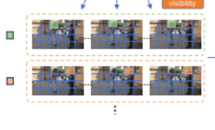
C) Temporal Motion Decoder
- C-1) Query Enhancement
- 사람의 pose, shape feature를 강화라기 위해 concat
- \(q'''^j_i = \text{Concat}(q''^j_i, p^j_i)\)
- \(q''^j_i\) : the updated human query
- \(p^j_i\) : \(F_i\) 에서 j번째 사람의 anchor point의 pixel feature
- C-2) Temporal Smoothing
- \(\text{Temporal-Self-Attn}({q'''^j_1, q'''^j_2, ..., q'''^j_N})\), \(j\) = 1, 2, …, \(S\)
- Temporal-Self-Attn : 시간축으로 motion을 Smooth하게 만듦
- C-3) Final Motion Predict
- \(\text{Cross-Attn}(q'''^j_i, F_i)\), \(i\) = 1, 2, …, \(N\), \(j\) = 1, 2, …, \(S\)
- 각 프레임에서 각 사람들의 쿼리와 해당 프레임의 feature를 Cross-Attention함
- output : SMPL-X parameter (\(\theta^j_i, \beta^j_i, \alpha^j_i\))
4. Training Objective
A) Bipartite Motion Matching
- 비디오에 몇명이 등장할지 모름
- 충분한 쿼리 준비 (\(S\)=100)
- Training
- 100개 motion 실제 사람의 GT와 1:1매칭
- human anchor trace errors를 기준으로 쿼리 선택
- Inference
- Confidence filtering : 확신도 낮은 예측 제거
- NMS(Non-Maximum Suppression) : 같은 사람을 여러 query가 중복 예측할 수 있음 \(\rightarrow\) 2D keypoint 유사도로 중복 제거
B) Loss function
- \(\mathcal{L}_\text{total} = \mathcal{L}_\text{trace} + \mathcal{L}_\text{SMPL-X} + \mathcal{L}_\text{J2D} + \mathcal{L}_\text{J3D} + \mathcal{L}_\text{vis} + \mathcal{L}_\text{conf}\)
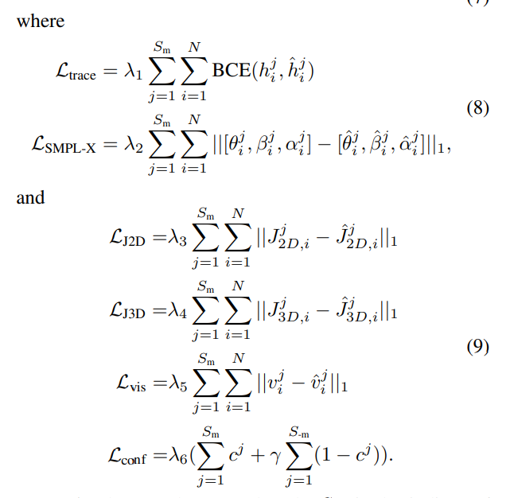
- \(S_m\) : GT와 매칭된 query
- Heatmap 예측 정확도 Binary Cross-Entropy ?
- SMPL-X parameter의 L1 distance/ 실제와 예측 차이의 L1 norm
- \(J_{2D}\): 3D joints를 2D로 re-projection한 것
- \(J_{3D}\): SMPL-X mesh vertices에서 regress한 3D joint
- Predicted Visibility score 차이
- \(S_m\) 은 매칭된 query, \(S_{-m}\) 은 매칭되지 않은 query, \(c^j\)은 j번째 사람의 predicted motion confidence ??? -> Motion prediction의 신뢰도 학습
C) M3C : A challenging Motion Dataset with Moving Camera
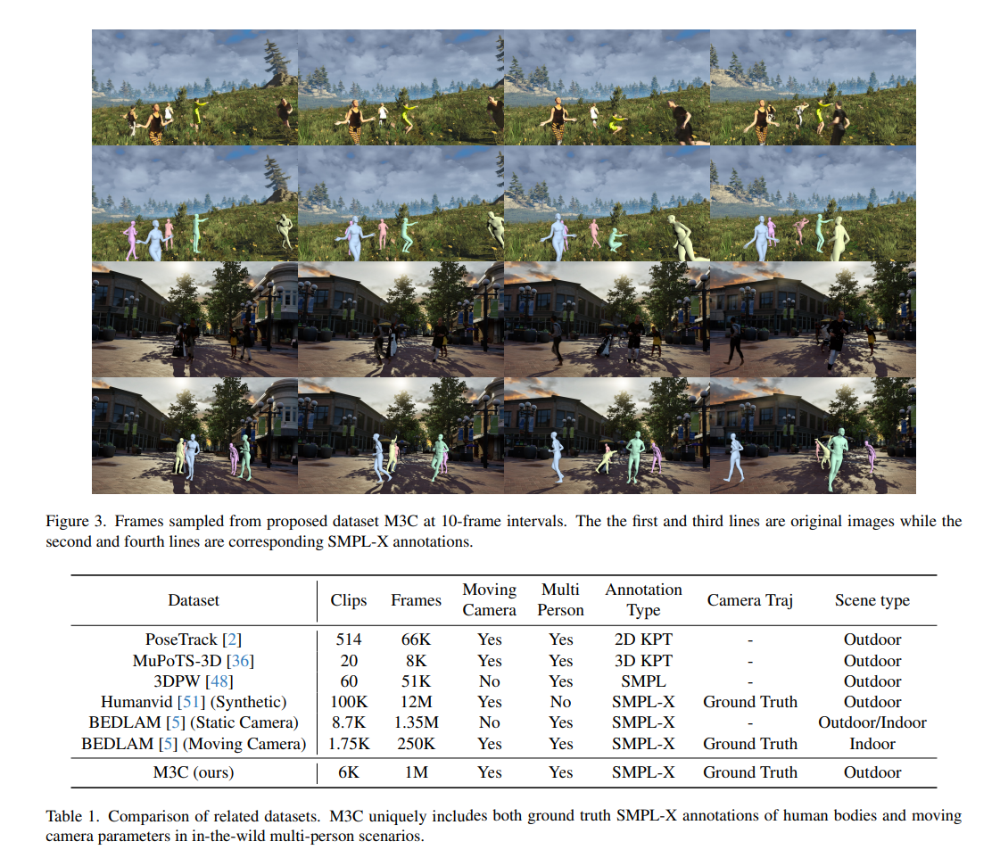
- BEDLAM에서 큰 body traslation이 있는 motion 샘플링
- inter-person occlusion 증가
- Unreal Engine 5로 렌더링을 통해 데이터 생성
5. Experiments
A) Datasets
- SMPL-X annotation이 필요
- Training : BEDLAM, M3C, 3DPW
- Test : BEDLAM, 3DPW
B) BEDLAM
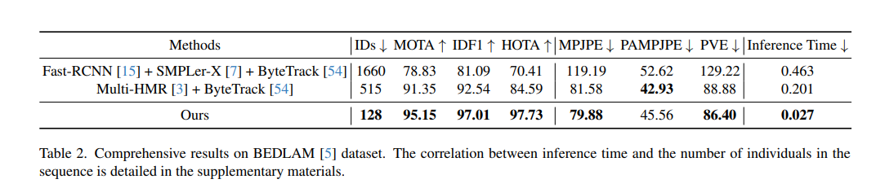
- Comprehensive Results on BEDLAM (Whole-body)
- ID switch 감소, 다른 tracking 성능도 압도적
- Pose estimation Quality
- Multi-HMR과 거의 비슷하지만 속도 7.4배 빠름
- BEDLAM : Occlusion에서 사람 놓짐, ID switch
- 3DPW : 일부 프레임에서 miss, ID 혼동
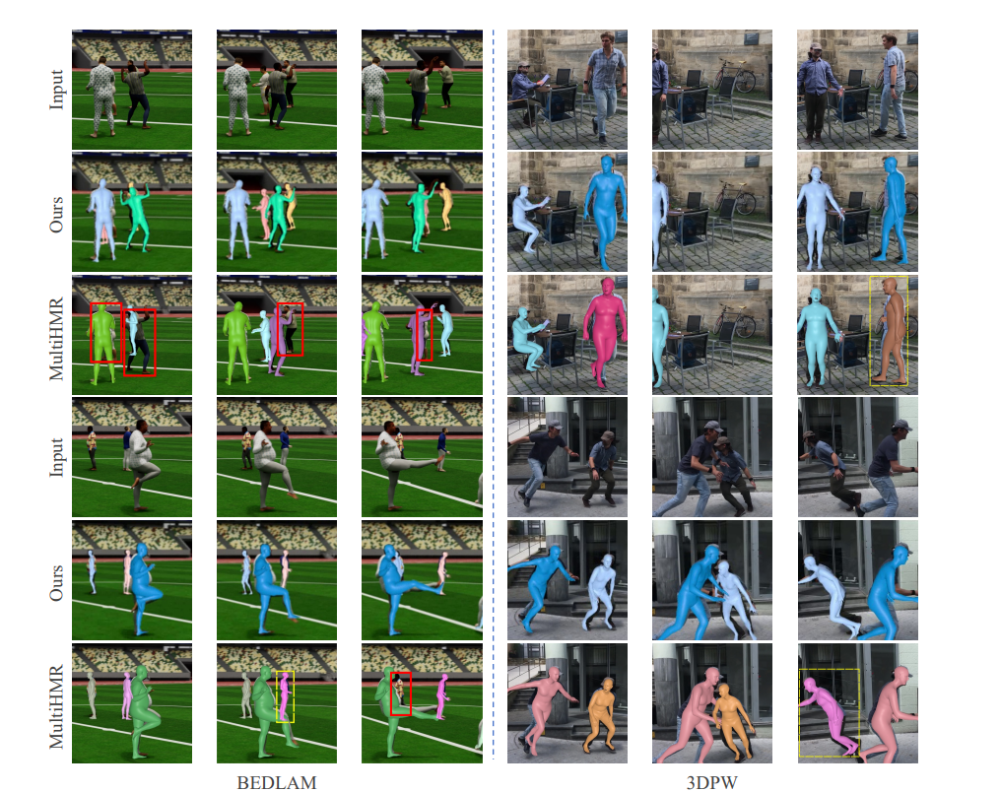
C) Dyna3DPW : Tracking 성능
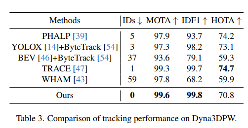
- 0 ID switches
- MOTA, IDF1에서 SOTA달성
- Trace와 거의 동등
D) 3DPW : Pose estimation 성능
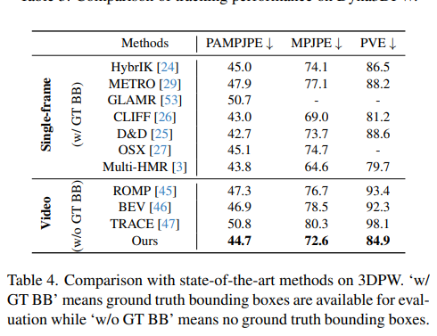
- Video 방법중 SOTA
- TRACE보다 우수
E) Ablation Study
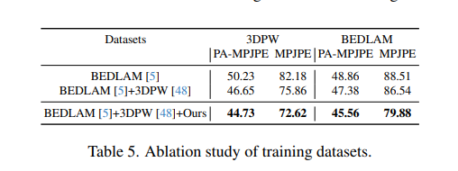
- BEDLAM + 3DPW + M3C를 모두 사용했을 때 가장 좋음
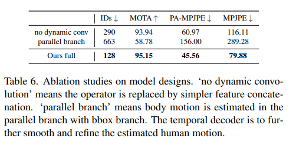
E) 평가지표
- Tracking
- IDs(ID switches): 사람을 제대로 인식 못한 수
- MOTA(Multi-Objct Tracking Accuracy):
- IDF1(Identification F1-score)
- Pose
- MPJPE(Mean Per Joint Position Error) : 관절 위치 에러 평균
- PA-MPJPE(Procrustes-Aligned MPJPE) : Scale, rotation, translation 보정 후 오차, Global position 오차 제거, pose 자체의 정확도만 측정
- PVE(Per Vertex Error) : 10,475개 vertices 위치 오차 명
6. Limitations and Future Work
A) Long-term Heavy Occlusion
- 오랜 시간 가려진 경우 Temporal attention만으로는 한계 존재
- \(\rightarrow\) 더 robust한 temporal attention 필요
B) Limited Traning Data
- 더 다양한 real-world 데이터 필요
- extreme occlusion 시나리오
- various camera motions